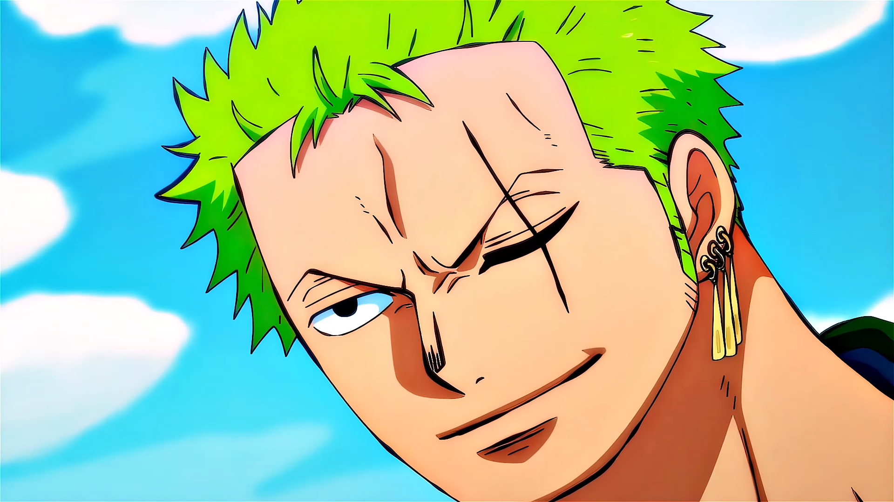
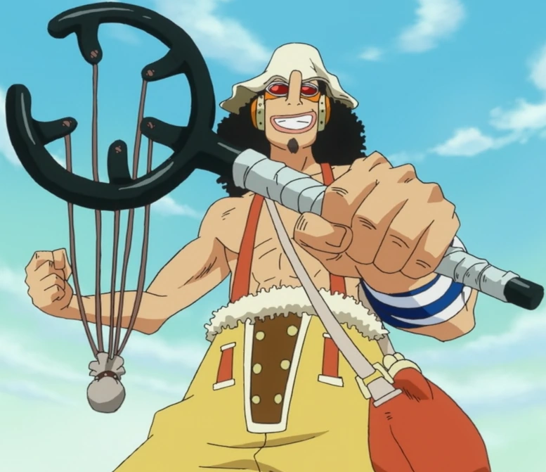
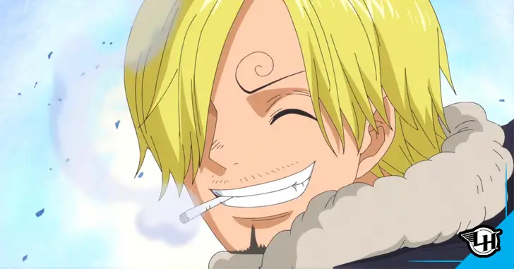
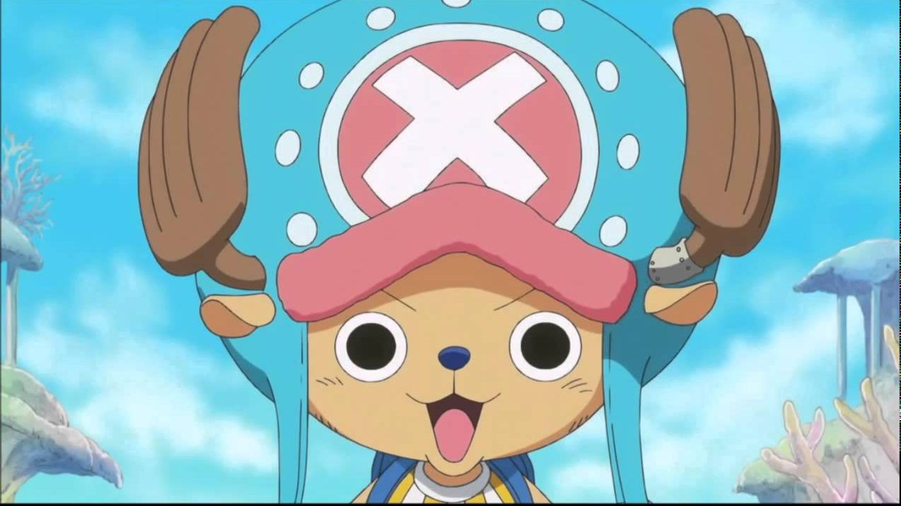
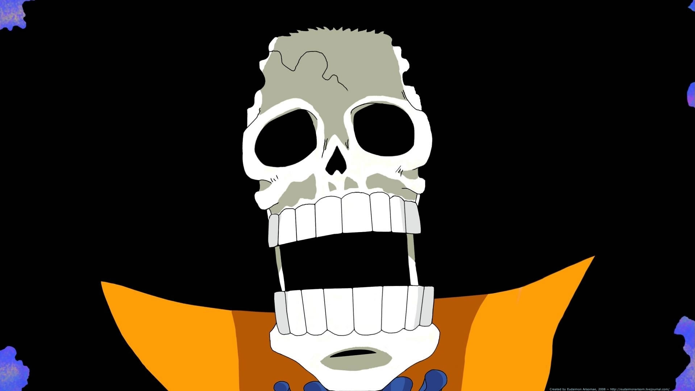
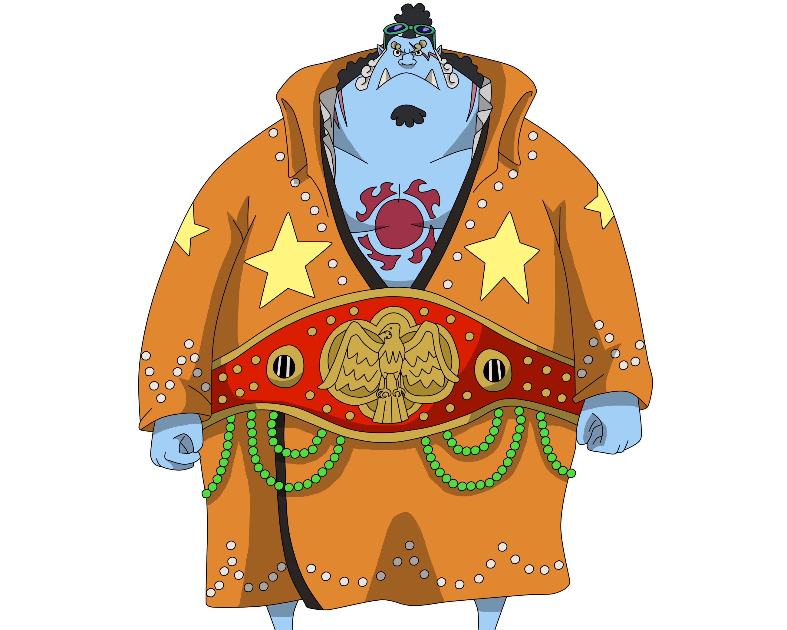

Personagens
- Monkey D. Luffy:
Monkey D. Luffy é o protagonista de "One Piece" e é um jovem aventureiro com a habilidade de esticar seu corpo como borracha devido a ter consumido a Fruta do Diabo Gomu Gomu. Ele sonha em se tornar o Rei dos Piratas, liderando sua tripulação, os Chapéus de Palha, em uma busca pelo tesouro lendário conhecido como "One Piece". Luffy é conhecido por sua personalidade corajosa, imprudente e sua devoção aos amigos. Ele é movido por um forte senso de justiça e está disposto a enfrentar desafios incríveis em sua jornada para alcançar seu objetivo. Sua natureza ingênua, mas determinada, o torna um personagem cativante e admirado em todo o mundo de "One Piece".

- Ronora Zoro:
Roronoa Zoro é um dos principais personagens de "One Piece". Ele é o espadachim e o espadachim principal dos Chapéus de Palha, a tripulação de Monkey D. Luffy. Zoro é conhecido por seu estilo de luta com três espadas e seu sonho de se tornar o melhor espadachim do mundo. Ele é geralmente retratado como um homem sério e dedicado, disposto a fazer qualquer coisa para alcançar seus objetivos. Sua personalidade focada e sua incrível habilidade com a espada o tornam um dos membros mais confiáveis da tripulação de Luffy.
 - Nami:
Nami é um dos membros principais dos Chapéus de Palha em "One Piece". Inicialmente introduzida como uma ladra, Nami sonha em desenhar um mapa completo do mundo. Ela se junta à tripulação de Monkey D. Luffy para alcançar esse objetivo e escapar de seu passado conturbado. Nami é conhecida por sua inteligência, habilidade em navegação e sua personalidade forte. Ela é a navegadora da tripulação e desempenha um papel vital na jornada dos Chapéus de Palha, sendo responsável por traçar rotas e lidar com a navegação enquanto viajam pelos mares perigosos do mundo de "One Piece". Sua evolução ao longo da série a transforma em uma amiga leal e valiosa para seus companheiros de tripulação.

- Usopp:
Usopp é um membro dos Chapéus de Palha em "One Piece". Ele é conhecido por ser um grande contador de histórias e um atirador de elite. Usopp sonha em se tornar um bravo guerreiro dos mares e é frequentemente visto exagerando suas próprias façanhas e inventando histórias mirabolantes. Ele possui um grande coração, embora seja frequentemente inseguro e propenso a contar mentiras para se destacar. Ao longo da série, Usopp desenvolve sua coragem e habilidades, tornando-se um membro valioso da tripulação de Monkey D. Luffy. Sua paixão pela aventura e seu desejo de ser reconhecido como um herói o tornam um personagem cativante em "One Piece".
 - Sanji:
Sanji é um dos membros principais dos Chapéus de Palha em "One Piece". Ele é o cozinheiro da tripulação e é conhecido por sua destreza na culinária e seu estilo de luta, o "Black Leg Style", que envolve poderosas técnicas de chutes. Sanji é um cavalheiro galante que valoriza a etiqueta e é extremamente protetor das mulheres. Ele sonha em encontrar o All Blue, um lendário mar onde todas as espécies de peixes e frutos do mar se reúnem. Sanji é notável por sua personalidade complexa, que combina paixão pela cozinha e combate, além de sua natureza cômica e seu hábito de flertar com belas mulheres. Ele desempenha um papel importante nas aventuras dos Chapéus de Palha e é conhecido por seu forte senso de lealdade à tripulação de Luffy.
 - Tony Tony Chopper:
"Chopper" é um apelido para Tony Tony Chopper, um personagem fictício do mundo de One Piece, uma popular série de mangá e anime criada por Eiichiro Oda. Chopper é um rena que comeu uma Akuma no Mi (Fruta do Diabo) especial chamada "Hito Hito no Mi", o que o transformou em um ser humano-rena. Ele é o médico da tripulação dos Chapéu de Palha e é conhecido por sua personalidade doce e inocente. Chopper tem a capacidade de se transformar em várias formas, incluindo uma forma gigante e uma forma que se assemelha a um ser humano adulto. Ele também é capaz de usar suas habilidades médicas e tem um grande coração, o que o torna um membro valioso da tripulação de Luffy. Chopper é uma figura querida na série e desempenha um papel importante em muitas aventuras dos Chapéu de Palha.
 - Nico Robin:
Nico Robin é um personagem do manga e anime "One Piece", criado por Eiichiro Oda. Ela é uma arqueóloga e ex-assassina que se tornou uma valiosa membro da tripulação dos Chapéu de Palha. Sua história de vida é marcada por tragédia e perseguição devido ao seu desejo de desvendar o Poneglyph, inscrições antigas que detêm segredos sobre a história do mundo. Robin possui poderes sobrenaturais devido à ingestão da Akuma no Mi "Hana Hana no Mi", que lhe permite criar e controlar partes do corpo, como mãos, em qualquer superfície. Robin é conhecida por sua inteligência, conhecimento profundo da história mundial e habilidades de combate formidáveis. Ela é uma personagem reservada, calma e misteriosa, que se tornou uma amiga leal para os Chapéu de Palha. Sua busca pessoal é desvendar os segredos do mundo, e ela desempenha um papel fundamental na narrativa ao ajudar a tripulação a navegar em desafios relacionados à história, além de se envolver em combates estratégicos. A história de Nico Robin é uma parte importante do enredo de "One Piece" e a torna uma das personagens mais intrigantes da série.

- Franky:
Franky é um personagem do mangá e anime "One Piece", criado por Eiichiro Oda. Ele é um ciborgue brilhante e habilidoso que é conhecido por sua personalidade excêntrica, seu corpo robusto e seu amor por construir e melhorar navios. Antes de se tornar um membro dos Chapéu de Palha, Franky era um pirata e o construtor do famoso navio "Thousand Sunny", que se tornou o navio da tripulação de Luffy.

- Brook:
Brook é um personagem do mangá e anime "One Piece", criado por Eiichiro Oda. Ele é um esqueleto vivo, membro da tripulação dos Chapéu de Palha. Brook é conhecido por sua natureza alegre e brincalhona, e ele é o músico da tripulação. A história de Brook é única e trágica. Ele era originalmente um ser humano, mas devido ao poder da Akuma no Mi "Yomi Yomi no Mi", ele voltou à vida após a morte em um corpo de esqueleto. Brook foi o último sobrevivente da sua tripulação original, o Rumbar Pirates, e deseja cumprir a promessa que fez aos seus companheiros falecidos.
 - Jinbe:
Jinbe é um personagem do mangá e anime "One Piece", criado por Eiichiro Oda. Ele é um peixe-homem, uma espécie de peixe humanoide que possui a capacidade de viver tanto na água quanto em terra firme. Jinbe é um habilidoso mestre em artes marciais e um dos membros mais antigos e confiáveis da tripulação dos Chapéu de Palha. A história de Jinbe é marcada por seu passado como um guerreiro do mar, uma classe de piratas peixe-homem que eram inimigos naturais dos humanos. No entanto, ele renunciou a essa vida e se tornou um aliado dos Chapéu de Palha. Jinbe é conhecido por sua personalidade calma, sábia e leal. Ele é um usuário habilidoso do "Fish-Man Karate," uma técnica de luta exclusiva dos peixes-homens.
